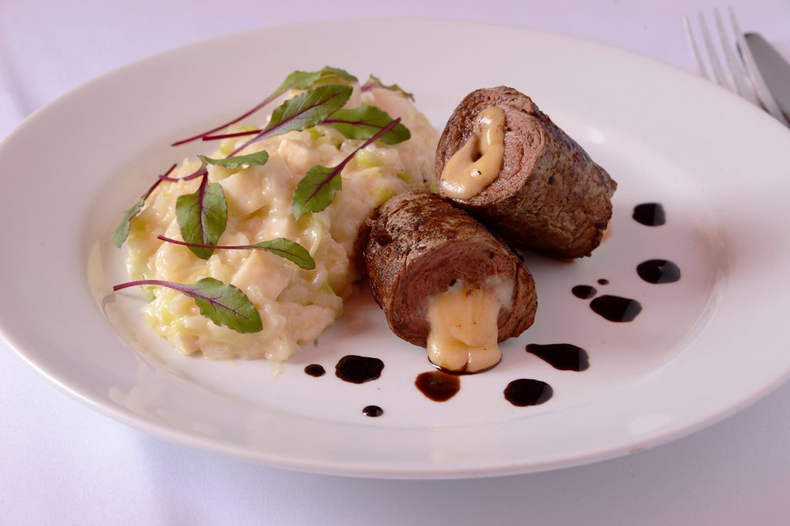

Entradas
Risoto de Camarão
O risoto é uma receita clássica da culinária italiana que pode ser feito com arroz arbóreo ou sobras de arroz. O risoto de camarão é simples de preparar e leva poucos ingredientes: caldo de legumes, queijo parmesão, limão e vinho branco.
Paillard de filet
É uma carne que é servida em fatias bem fininhas. Criado pelo chef francês Paillarde, a carne pode ser feita utilizando cortes como o filé mignon e o coxão mole.
